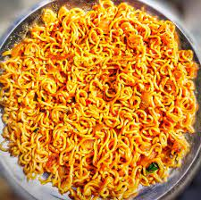

2. Boil the water inside it

3. Menwhile the water is Boiling prepare some vegetables by chopping them

4. After the water boils place maggie in the pan

5. After some time add the chopped vegetable and the spice

6. Now stir the whole thing for some time

7. Now close the lead and leave it for some time
The end result of the process is tasty and healthy maggie noodles

